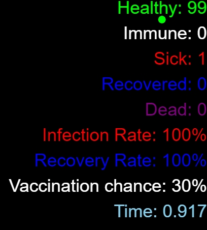
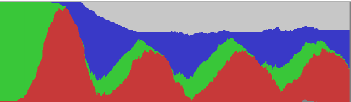
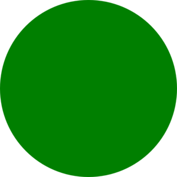
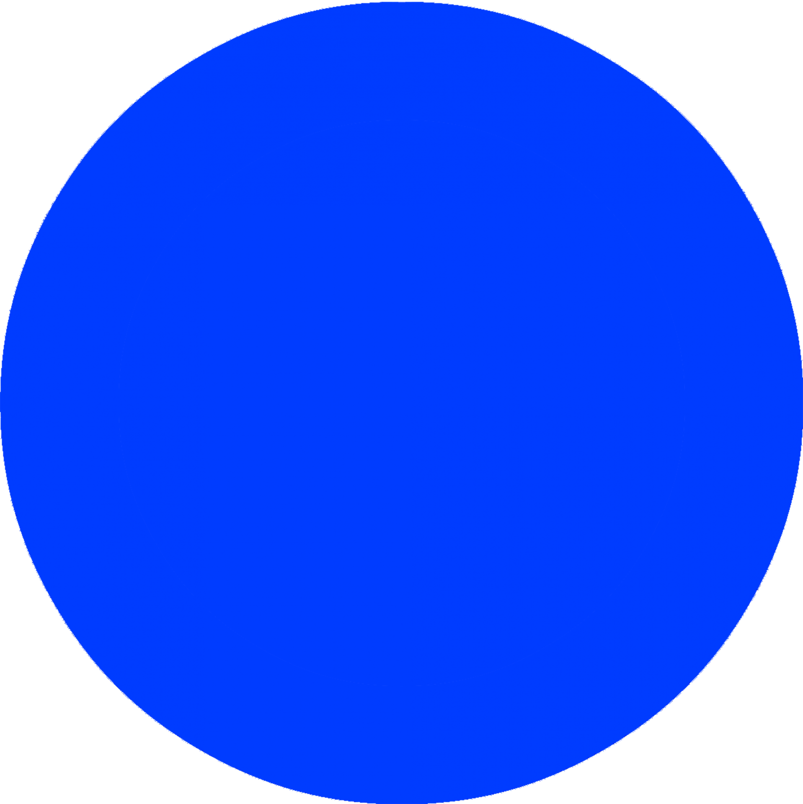

Infection Simulation is a simple system that tests how infectious this virus(this case, the COVID-19) is, how many "people" survive after a certain amount of time, and how many recover.
As the simulation runs, healthy circles will first start to appear on the screen. After three seconds, a sick circle will be spanwed, infecting other circles that it touches. After a while(approximately 7 seconds), each sick circles start recovering, and change its color to blue. The circles "live" for 15 seconds after they are spanwed. And for every circle that "dies" and disappear from the screen, a new, healthy circle is "born"(This cycle continues infinitely). When a circle is born, they have a chance of getting vaccinated. If they are vaccinated, then they become immune, and are not able to be infected or infect any other circles.
The legend that is placed on the right of the screen provides information about the infection rate, recovery rate, vaccination chance, and also shows the amount of time passed since the simulation started.

The graph, which is located at the top of the screen, shows the proportions of each type of circles.

Red circles represent sick people

Green circles represent healthy people
White dots represent immune people when they receive vaccination
Blue circles represent people who are recovered after being sick.

You can click on any of these three buttons to change the infection rate, recovery rate, or the vaccination chance, either before starting the simulator, or while the simulator runs.
Click here to go to the simulation!